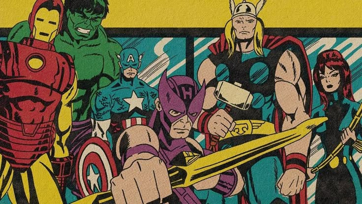
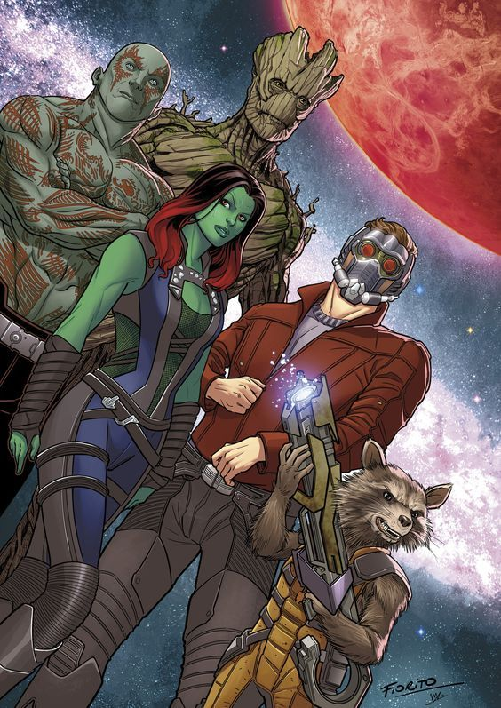
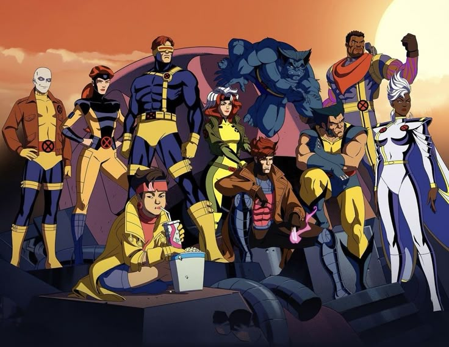
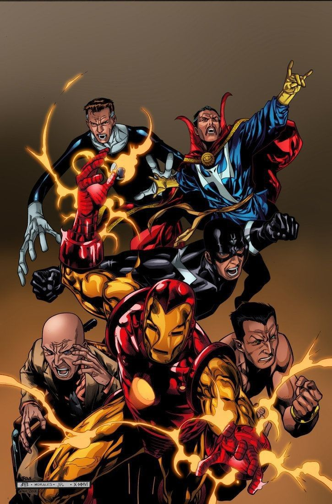
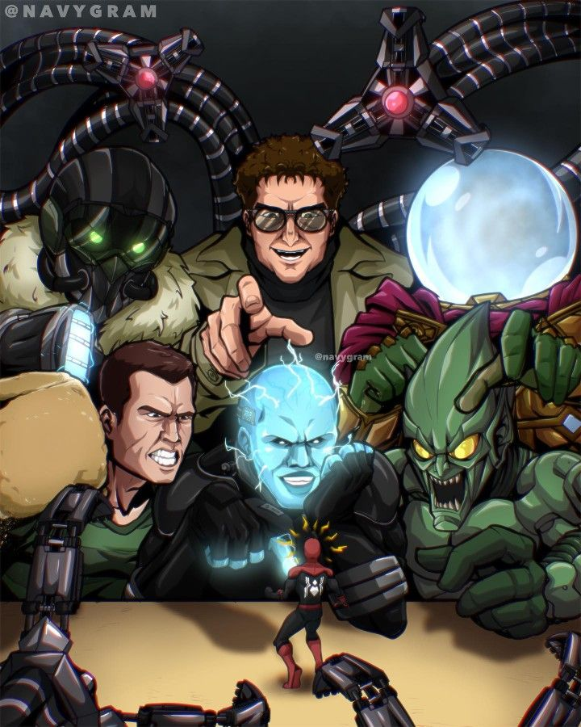
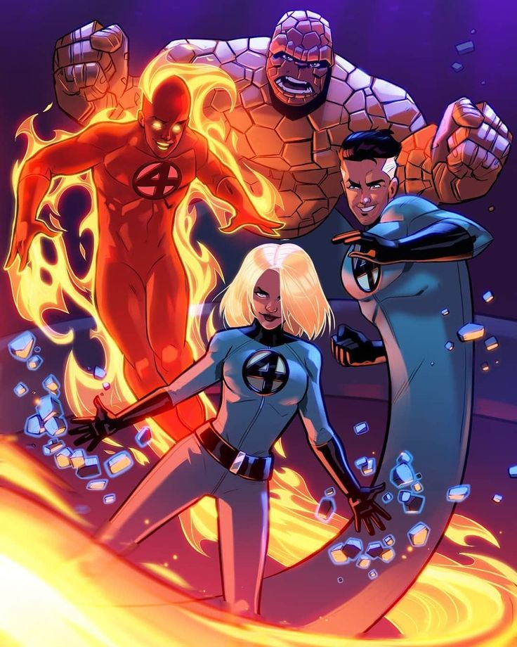

Vengadores
Los Vengadores son un grupo de heroes reunidos por iniciativa de Nick Fury para proteger la Tierra de amenazas que los humanos comunes no pueden enfrentar. Desde su fundacion, han luchado contra invasores alienigenas, inteligencias artificiales y fuerzas interdimensionales. Este equipo se caracteriza por la union de individuos muy distintos que aprenden a trabajar juntos por el bien comun. Han sido pieza clave en eventos como la invasion de Loki, la batalla contra Ultron, la guerra civil entre heroes y la lucha contra Thanos.

Guardianes de la Galaxia
Los Guardianes de la Galaxia son un grupo de inadaptados espaciales que se unen inicialmente por interes propio pero terminan formando una familia. Operan en el cosmos y enfrentan amenazas como Ronan, Ego el planeta viviente y el propio Thanos. Aunque no son heroes convencionales, su valor y lealtad los convierte en defensores esenciales del universo. Sus historias exploran temas de perdon, pertenencia y redencion en un escenario de ciencia ficcion.

X-Men
Los X-Men representan a los mutantes, humanos nacidos con habilidades especiales. Fundados por el Profesor Charles Xavier, su mision es lograr la coexistencia pacifica entre humanos y mutantes, aunque muchas veces deben luchar contra la discriminacion, el odio y villanos como Magneto o los Centinelas. A lo largo del multiverso, los X-Men muestran versiones alternativas con diferentes miembros y resultados, pero siempre manteniendo el espiritu de lucha por la justicia y la aceptacion.

Los Illuminati
Los Illuminati son una alianza secreta formada por algunos de los personajes mas inteligentes y poderosos del multiverso. Tienen como objetivo tomar decisiones estrategicas que mantengan el equilibrio entre realidades, incluso si deben actuar de forma fria y calculadora. En la Tierra-838, el grupo estaba formado por Doctor Strange, Reed Richards, el Profesor Xavier, Black Bolt, Maria Rambeau como Capitana Marvel y Capitana Carter. Aunque sus intenciones son nobles, sus metodos a menudo causan conflictos morales.

Los Seis Siniestros
Los Seis Siniestros son una alianza de villanos que se unen para destruir a Spider-Man. Aunque los miembros cambian segun la version del universo, los mas frecuentes son Doctor Octopus, Electro, Sandman, Vulture, Mysterio y Rhino. En varias realidades, los Seis Siniestros logran desafiar a multiples versiones de Spider-Man, generando caos tanto en Nueva York como en el multiverso. Esta agrupacion representa la union del odio, la venganza y el deseo de poder.

Los Cuatro Fantasticos
Considerados la primera familia de heroes de Marvel, los Cuatro Fantasticos obtuvieron sus poderes tras un accidente con radiacion cosmica en el espacio. Reed Richards, Sue Storm, Johnny Storm y Ben Grimm deciden usar sus habilidades para explorar lo desconocido y defender al planeta. Son esenciales en la ciencia y exploracion dentro del universo Marvel y sus descubrimientos suelen afectar otras realidades. En muchas versiones del multiverso, su existencia es clave para prevenir catastrofes dimensionales.
